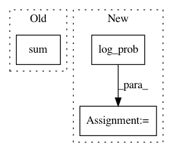

d794af8ca756cbcf7927701e0c7f85e2767b76f7,test/distributions/test_multivariate_normal.py,TestMultivariateNormal,test_log_prob,#TestMultivariateNormal#,204
Before Change
diffs = values - mean
res = MultivariateNormal(mean, DiagLazyTensor(var)).log_prob(values)
actual = -0.5 * (math.log(math.pi * 2) * 4 + var.log().sum(1) + (diffs / var * diffs).sum(1))
self.assertLess((res - actual).div(res).abs().norm(), 1e-2)
def test_kl_divergence(self):
After Change
diffs = values - mean
res = MultivariateNormal(mean, DiagLazyTensor(var)).log_prob(values)
actual = TMultivariateNormal(mean, torch.eye(4) * var).log_prob(values)
self.assertLess((res - actual).div(res).abs().item(), 1e-2)
mean = torch.randn(3, 4)
var = torch.randn(3, 4).abs_()
In pattern: SUPERPATTERN
Frequency: 3
Non-data size: 3
Instances
Project Name: cornellius-gp/gpytorch
Commit Name: d794af8ca756cbcf7927701e0c7f85e2767b76f7
Time: 2018-10-22
Author: jrg365@cornell.edu
File Name: test/distributions/test_multivariate_normal.py
Class Name: TestMultivariateNormal
Method Name: test_log_prob
Project Name: cornellius-gp/gpytorch
Commit Name: b35804cc94a487791f194faed5dde1c642dcee11
Time: 2019-11-10
Author: gpleiss@gmail.com
File Name: gpytorch/likelihoods/likelihood.py
Class Name: _Likelihood
Method Name: expected_log_prob
Project Name: facebookresearch/Horizon
Commit Name: bbd50fcbc6d67b7acba0a794b1cdb47ccf5731e2
Time: 2019-05-10
Author: edoardoc@fb.com
File Name: ml/rl/models/actor.py
Class Name: DirichletFullyConnectedActor
Method Name: forward